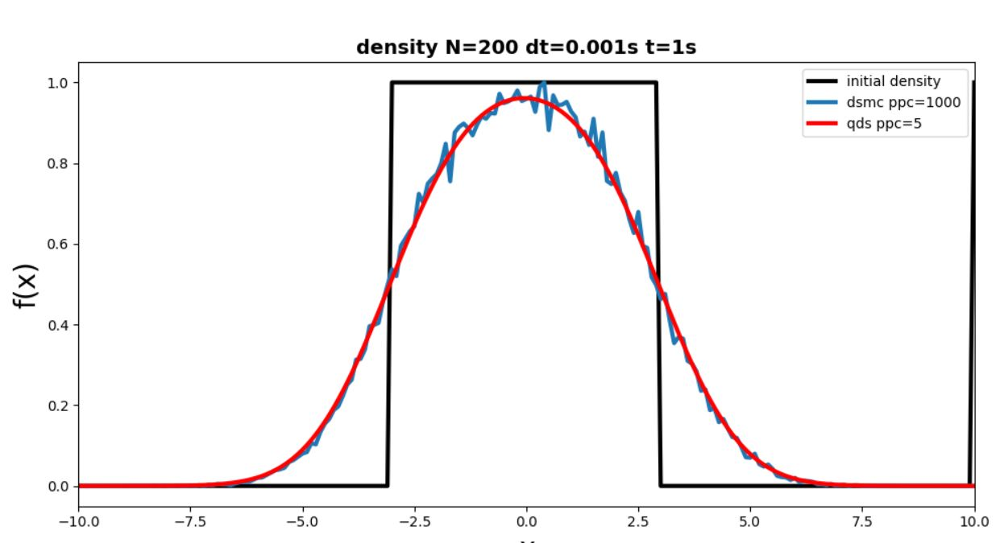

<!DOCTYPE html>
<html xmlns="http://www.w3.org/1999/xhtml" xml:lang="en-us" lang="en-us"></html>

<head>
    <meta http-equiv="content-type" content="text/html; charset=utf-8">
    <meta name="generator" content="Hugo 0.59.1">
    <meta name="referrer" content="origin">
    <meta name="viewport" content="width-devide-width,initial-scale=1.0, maximum-scale=1">

    <title>My research</title>
    <link rel = "stylesheet" href="research.css">
    <meta property="og:url" content="https://www.scottsikorski.com/research/">
    <meta property="og:title" content="My research">
</head>

<body class = "all">
    <div class = "header">
        <div class="container">
            <div class ="header-about">
                <a href="https://scottsikorski.com">
                    <h1>Scott Sikorski</h1>
                </a>
                <h2 id="quick-description">
                    Aspiring software engineer, Research assistant, Efficiency enthusiast 
                </h2>
            </div>
            <div class="menu">
                
                <ul class="sidebar-menu">
                    <li>
                        <a href="/">About</a>
                    </li>
                    <li>
                        <a href="/projects">Projects</a>
                    </li>
                    <li>
                        <a href="/research">Research</a>
                    </li>
                    <li>
                        <a href="/contact">Contact</a>
                    </li>
                </ul>

                <ul class="sidebar-socials">
                    <li>
                        <a href='https://github.com/sgsikorski'>Github</a>
                    </li>
                    <li>
                        <a href="https://hajim.rochester.edu/me/sites/sefkow/about/index.html">Research Overview</a>
                    </li>
                    <li>
                        <a href="https://www.linkedin.com/in/scott-sikorski-733a601b5/">LinkedIn</a>
                    </li>
                    <li>
                        <a href="https://www.instagram.com/scott.ss/">Instagram</a>
                    </li>
                </ul>

            </div>
            
        </div>
    </div>

    <div class="main">
        <div class = "heading">
            <h1>My research under Dr. Adam B. Sefkow</h1>
            <a href="https://hajim.rochester.edu/me/sites/sefkow/about/index.html">Quick overview of TriForce</a>
            <h2>Algorithm development for physics simulations</h2>
            <p>Note: Programs unavailable on GitLab at the moment but are available on request</p>
        </div>
        
        <div class="main-container">
            <h2>General overview</h2>
            <p>
                I started with an algorithm called Direct Simulation Monte Carlo (DSMC) which is a method of simulating fluids
                where a high particle count is used for simulations that are still considered noisy and unusable. From there
                Quiet Direct Simulation Monte Carlo (QDSMC) was developed that is practical in terms of computational complexity
                and simulations.
            </p>
            <p>
                After doing QDSMC for the diffusion of a slab using only the density values, I created this algorithm to be expanded to 3d,
                include velocity, temperature, and pressure of the fluid, and allow user accessibility.
            </p>
            <h2>How it works</h2>
            <p>
                QDSMC begins at time = t where dt is set by the user. We create particles in each cell of the fluid where the cell 
                has quantities such as density, average velocity, temperature, and pressure. Then in each cell where particles exist 
                (because the density of that cell is 0), a user set number of particles are created and each particles' mass, velocity,
                and specific internal energy are calculated. These particles are gaussianly distrubuted so we use a hermite-gaussian quadruate
                to determine the weights of each particle.
            </p>
            <p>
                Once we advance our particles to their t+dt new position, the mass, momentum, and energy of all the cells are now tabulated
                using the cell and its adjacent cells. From these collected values, we can only calculate our new t+dt density, average velocity,
                temperature, pressure, and velocity variance. After that, we destroy the particles.
            </p>
            <h2>The why</h2>
            
            <p>
                From this new method of QDSMC, there is a time save of ~18x so our computational complexity greatly reduces. As well,
                because there is less noise (less random spikes), we can use this faster method to simulate experiments and use
                those results as if they were real life experiments, saving a lot of time and power usage.
            </p>
            <h2>Additional features</h2>
            <ul>
                <li>User can choose the molecule they want to work with so it becomes extensively accessible</li>
                <ul>
                    <li>Using a library I built, user requests an atom with its atomic number then gets all of its info</li>
                    <li>Hash map simulates a periodic table where buckets coorespond to atomic number and row contains the stable atom and all its isotopes</li>
                </ul>
                <li>User can choose their initial conditions for density and temperature</li>
                <li>2D and 3D models are created</li>
                <ul>
                    <li>I created the extension to 2D and 3D for all methodology of QDSMC</li>
                    <li>Program now simulates it in user chosen dimensions</li>
                </ul>
                <li>All written in Python as of now, to be translated into C++ during Fall 2021</li>
            </ul>
        </div>

    </div>
    
</body>